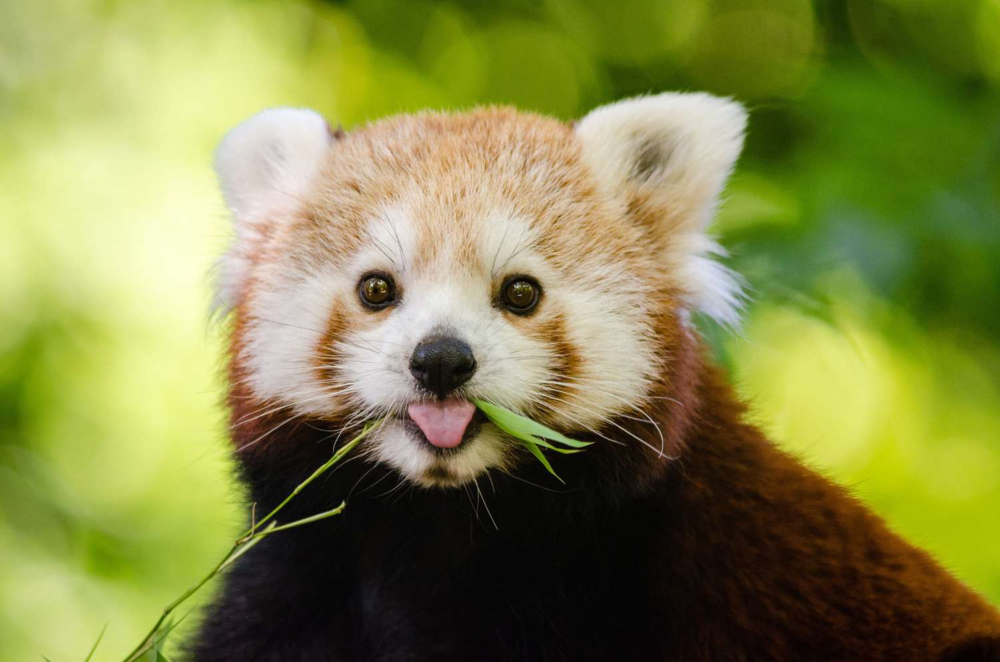

The red panda is currently an endangered species with a population of less than 10,000 individuals left in the wild, and their population has declined by over 40% over the last two decades. This ia due to a loss of place to nest in trees and bamboo, getting caught in traps set for animals such as pigs and deer, and poached for in countries such as China and Myanmar for their uniquely coloured pelts.
The protection of red pandas not only equals to a cleaner ecosystem, but stops deforestation. Due to the species nesting in trees, if deforestation in their area doesn't continue, their populations will grow higher and may not be threatened with extinction.
